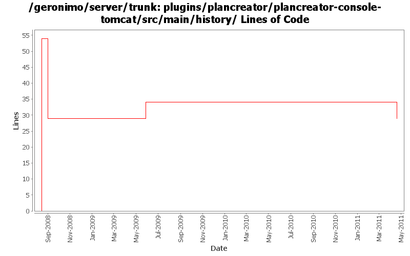

[root]/plugins/plancreator/plancreator-console-tomcat/src/main/history

| Author | Changes | Lines of Code | Lines per Change |
|---|---|---|---|
| Totals | 7 (100.0%) | 69 (100.0%) | 9.8 |
| djencks | 3 (42.9%) | 62 (89.9%) | 20.6 |
| xuhaihong | 1 (14.3%) | 5 (7.2%) | 5.0 |
| dwoods | 2 (28.6%) | 2 (2.9%) | 1.0 |
| genspring | 1 (14.3%) | 0 (0.0%) | 0.0 |
Reenable plan creator admin console portlet, patch from Shenghao Fang
0 lines of code changed in 1 file:
more required updates due to renaming of the connector and transaction artifacts to include -1_6 in r805984
1 lines of code changed in 1 file:
update other XML files with embedded versions from 2.2-SNAPSHOT to 3.0-SNAPSHOT
1 lines of code changed in 1 file:
GERONIMO-4692 sort dependencies.xml, except for connector-1_6
8 lines of code changed in 1 file:
GERONIMO-4503 PlanCreator threw exception with .war (Patch from Rex Wang)
5 lines of code changed in 1 file:
GERONIMO-4239, sort of. Use transitive depenedencies in c-m-p everywhere. This may break stuff.... let me know
0 lines of code changed in 1 file:
GERONIMO-4248 Add dependency history files
54 lines of code changed in 1 file: